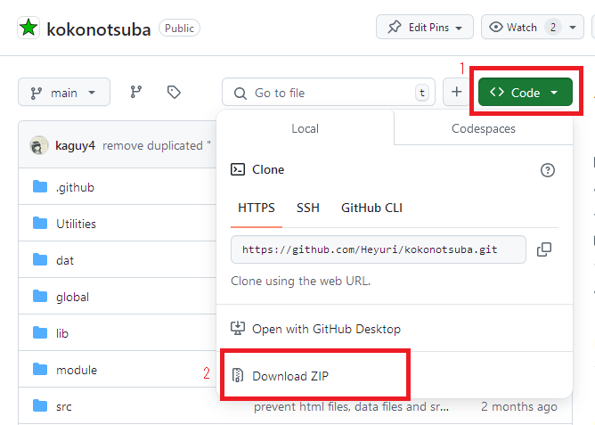

Get Kokonotsuba Running

Obtain
Get the latest version from the Github repository. If you haven't ever used Github, this is how you can get it as a zip:
Unzip it on the directory where your board will be at.
Changing static directory
The static directory is where certain css/image/html files used by Kokonotsuba are stored on. By default it's on boarddir/static (eg. example.net/b/static/) and you don't need to do anything if you're fine with that, but you may want to change its location or centralize it for multiple boards.
If you change its location, go to global/globalconfig.php and modify $config['STATIC_URL'] and $config['STATIC_PATH'] values
Setting up the dat/ folder
Some sensitive information (eg. error logs) are stored on dat/ folder. You must either make the directory non web accessible, or move it to a non-web directory.
If you change its location from, go to global/board-configs/boardconfig.php and change $config['STORAGE_PATH'] to absolute server path of new dat/ folder location.
If you are using multiple boards, it's suggested to use different dat/ folders for each board.